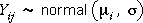

Notation
The approach that we took in the previous section to modelling data from two groups can be extended to data from any number of groups. To simplify the formulae, we use two subscripts for the response values, the first of these denotes the group (1, 2, ..., g) and the second denotes the observation within its group (1 to ni).
yij = the j'th of the ni response values in the i'th group
Model for g groups
We again assume a normal distribution for the values in each group and that all groups have the same standard deviation, σ.
|  | for the j'th value in group i. |
In the following pages, we show that this model for g groups can also be expressed as a general linear model (GLM).
Parameters for the normal model
The diagram below shows a normal model for four groups.
The model has 5 parameters (the group means and σ). Use the sliders on the right to adjust the parameters of the model.
The pale blue bands under the normal curves stretch two standard deviations on each side of the group mean. Click Take sample a few times to observe typical data sets that would be obtained from this model. Observe that approximately 95% of the values are within the blue bands — about 95% of values from any normal distribution are within 2 standard deviations of the mean.
Note that this model (and analysis of variance based on the model) are only appropriate if the values in all groups have similar spread.